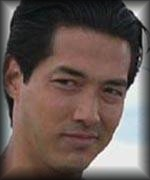
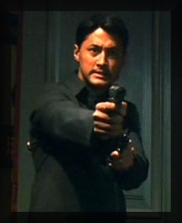
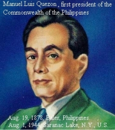
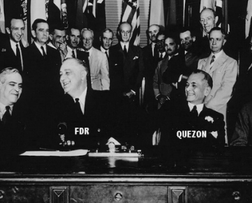
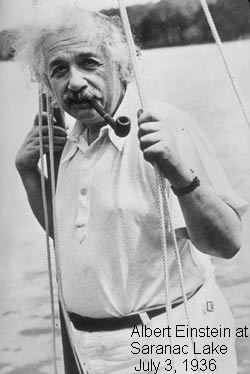
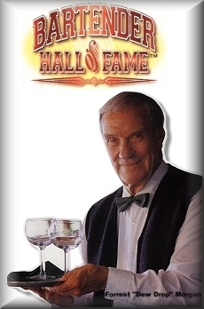
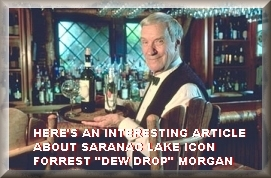

Dylan Jason Ratigan was born in Saranac Lake at 6:20 PM on April 19, 1972 to John and Adrienne Ratigan. He weighed in at 7 pounds 9 ounces. John was a big Bob Dylan fan, by the way. Dylan's Grandfather was the colorful and beloved Saranac Lake Mayor, FRANK RATIGAN.
Dylan graduated from SLHS in the top ten in 1990.
He then earned a Bachelor's degree in Political Economics from Union College. Initially he worked for the Portsmouth Herald, New Hampshire. He was later a writer, then Global Managing Editor for Bloomberg News.
Dylan was anchor and co-creator of CNBC's "Bullseye". He co-created and hosted, Bloomberg's "Morning Call" conducting interviews with notable business and political leaders.
In 2003 Dylan founded and managed the Ratigan Group, advising corporations on financial communications. He has also worked as contributor to ABC News and has published hundreds of articles in newspapers and magazines. Some of his side interests are glider-piloting, kite surfing and mini-golfing.
Dylan's father, John Ratigan, participated in bobsledding in the 60's as brakeman for the well-known Norwegian bobsledder, "Happy Harry" Anderson. Harry drove the infamous "Tyler Two-man", which bore a Vikings helmet on its cowl. The sled was heavy and built like a tank but was known to be a little finicky. I can attest to this fact personally after we performed a somersault after hitting a deep cut in the finish curve in March of '66. Except for bent runners, the sled was, amazingly, still in good condition. The "Tyler Two-man" ended up it's career by decorating the roof of Monty Purdy's Elm Tree Inn and could be seen there for several years after.
I'm not sure if Dylan has tried "The Champagne Of Thrills" yet but it may be just as well if he doesn't.
You will find Dylan hard at work at CNBC anchoring "Fast Money" and "Closing Bell".


His father William Wong is a Chinese Immigrant from Shandung Province and restaurant owner. His mother, Connie Van Yserloo, is an artist of Dutch, French, Canadian and Indian descent. She is a native of Saranac Lake, New York, where she and her husband, Bill owned and operated the Shan-Gri-La Chinese Restaurant at 49 Broadway in the late 50's.
Russell, born in Troy, NY was raised in Albany for 14 years and got his first job in cleaning his parents restaurant. Since his role in an episode of "21 Jump Street", he has appeared in many movies and TV shows. He starred in the recent TV series, The Black Sash.
But Russell is not only a good actor but also an excellent photographer!!! Russell's brother, Michael Wong, is a famous Hong Kong actor.
Russell married his long-term Chinese girlfriend Flora Cheong-Leen, a fashion designer whom he met 20 years earlier. He is also the father of a nine-year-old daughter with an African American dancer.
Steve is an assistant cameraman, Bradley is a hair stylist, Gregory is a bass guitarist, Declan is a professional magician and actor and Michael is already a Hong Kong box-office star. An older sister Victoria, is happily married with two children.
Blackout Murders, The (2003)
Belly of the Beast (2003) .... Jantapan
"Black Sash" (2003) TV Series .... Tom Chang
Lost Empire, The (2001) (TV) .... Monkey King
Tracker, The (2000/I) .... Rick Tsung
Romeo Must Die (2000) .... Kai
Takedown (2000) .... Tsutomu Shimomura
Prophecy II, The (1998) (V) .... Danyael
"Vanishing Son" (1995) TV Series .... Jian-Wa Chang
Chunggamsuk (1994) .... Ken
Vanishing Son IV (1994) (TV) .... Jian-Wa
Vanishing Son III (1994) (TV) .... Jian-Wa
Vanishing Son II (1994) (TV) .... Jian-Wa
Vanishing Son (1994) (TV) .... Jian-Wa
Joy Luck Club, The (1993) .... Lin Xiao
Xia ri qing ren (1992) .... Zeniger
New Jack City (1991) .... Park
China Cry: A True Story (1990) .... Lam Cheng Shen
Gwang tin lung foo wooi (1989) .... Bobby Chow
Eat a Bowl of Tea (1989) .... Ben Loy
C.A.T. Squad: Python Wolf (1988) (TV)
China Girl (1987) .... Yung Gan
Harry's Hong Kong (1987) (TV)
Gwai ma haau yuen (1986) .... Mr. Wong, the Physical Education Teacher
Tai-Pan (1986) .... Gordon Chen
Ge wu sheng ping (1985) .... Russell
"Commander in Chief" in episode: "First Disaster" (episode # 1.6) 1 November 2005
"Just Legal" playing "District Attorney" in episode: "Pilot" (episode # 1.1) 19 September 2005
"CSI: Crime Scene Investigation" playing "Lieutenant Kim" in episode: "No Humans Involved" (episode # 5.10) 9 December 2004
"Touched by an Angel" playing "George" in episode: "The Spirit of Liberty Moon: Part 2" (episode # 4.27) 17 May 1998
"Touched by an Angel" playing "George" in episode: "The Spirit of Liberty Moon: Part 1" (episode # 4.26) 17 May 1998
"21 Jump Street" in episode: "The Dragon and the Angel" (episode # 3.7) 15 January 1989
"The Equalizer" in episode: "Riding the Elephant" (episode # 4.3) 9 November 1988
Russell also starred in "TAKEDOWN", the Kevin Mitnik story, and is currently working on remakes of "Hawaii Five 0" and "Charlie Chan".

After finishing high school, he left for Hong Kong to try his luck at acting. His brothers Russell Wong and Declan Wong would also become actors in the Hong Kong film industry. There were a number of significant factors working against Wong's eventual success in the Hong Kong film industry including an inability to speak Cantonese, no formal training in acting and no background in martial arts. He also lacked an entree into the tightly knit Hong Kong film indutry.
His debut was in 1983's Invincible Obsessed Fighters which was a kung fu film. His next significant film was Royal Warriors aka In the Line of Duty which established his dominant image for the first part of his career as a naive but tough outsider. In 1986, he would also star in Legacy of Rage alongside Brandon Lee in his only Hong Kong movie.

Although Quezon fought in the Philippine-American War he became convinced after the Philippines' defeat that the only way to independence was through cooperation with the U.S. He served in the Philippine Assembly (1907–09).
As the Philippines' representative in the U.S. House of Representatives (1909–16), he played a major role in obtaining Congress's pledge of independence for the Philippines (1916) and fought for passage of the Tydings-McDuffie Act (1934), which laid out a timetable for independence.
He became President of the Commonwealth (a precursor to the Independent Republic) in 1935 and was reelected in 1941. Quezon escaped from Luzon in the Philippine Islands on February 20, 1942, in a United States submarine after the Philippines had fallen to the Japanese.
As president he initiated administrative reforms, undertook many defense measures, and greatly expanded his power. He conducted a covert government-in-exile from Washington, DC and in the summers of 1943 and 1944 he came to Saranac Lake, N.Y. and lived in the McMartin Camp on Lower Saranac Lake. He died of complications from Tuberculosis at the camp on August 1, 1944, at the age of 65.
Quezon's remains were interred temporarily in a mausoleum at Arlington (Va.) National Cemetery; subsequently reinterred in Cemeterio del Norte, Manila, Philippines.
On July 3, 1946 his body was carried to Luzon, Philippines aboard the newly commissioned (November 18, 1945) aircraft carrier, USS Princeton, which had been assigned a special voyage specifically for that purpose. He did not live to see full independence for the Philippines. QUEZON CITY, which was the official capital of the Philippines from 1948 to 1976, and was so named in his honor.
For nearly 30 years, President Manuel L. Quezon lay alone inside the crypt at the shrine named in his honor. On April 28th 2005, he was reunited with his beloved wife Doña Aurora Aragon-Quezon when her body was moved to the Quezon City Memorial Shrine.
Doña Aurora was killed on April 28, 1949, in an ambush by members of the Hukbong Bayan Laban sa mga Hapon, an underground communist alliance formed during World War II against the Japanese army. Her daughter, Ma. Aurora, and Zenaida's husband, Philip Buencamino, who were traveling with her were also killed in the ambush.
Below is a picture of Quezon and FDR.



Here is an exerpt from "Einstein, The Life And Times" by Ronald W. Claric:
"During World War II Albert Einstein worked for the U.S. Navy as a research consultant in the field of conventional explosives, and he continued to indulge his passion for sailing at Saranac Lake and on Princeton's Carnegie Lake. On one occasion, during the summer of 1944 when he was 65 years old, Einstein was sailing with three companions on Saranac Lake, high in the Adirondacks in choppy conditions. When he hit a rock, the boat quickly filled with water and capsized. Fortunately, the water was warm and a motorboat was nearby operated by a young boy, Donald Duso. Einstein was trapped beneath the water under the sail, and his leg had become tangled in a rope. Without knowing how to swim, he managed to free his leg and claw his way to the surface, where he was rescued. Had he panicked, undoubtedly he would have drowned."
"Einstein was at Saranac Lake on August 6, 1945, when he heard the radio announcement of the bombing of Hiroshima. He was devastated; here was tragic proof that E indeed equalled mc². That formula forecast the release of formidable quantities of energy if the atom were ever split. Now the nucleus of the uranium atom had indeed been split, and the resulting energy had been used to kill thousands of human beings."
"Almost overnight," says Clark, "Einstein became the conscience of the world." And as such he wrote, spoke and broadcast throughout the 10 years of life that remained to him."
Here is another rescue story which I quote from Chuck Rothman's "Einstein's Long Island Summer": "One time, Einstein actually fell into the water and had to be rescued by a teenager who had been passing by and heard his calls for help. The kid left and didn't even tell his name."
The next quote is from a journal by Lyman Briggs, one of the members of THE MANHATTAN PROJECT, which incorporated some of Al's ideas into the ATOMIC BOMB: "One day in September 1942, 16-yr old Peter Briggs Myers (Grandson of Lyman Briggs) was canoeing on Saranac Lake, NY. The weather turned bad, and he spotted a lone man in a small sailboat having great difficulty lowering the sail. Peter paddled along side and helped to bring the sailboat safely to shore. He immediately recognized the lone sailor as Albert Einstein. At Einstein's cottage, the two men dried out and spoke. Peter Myers mentioned his physicist grandfather. Yes, Einstein said he knew him, but the connection—the secret Manhattan Project—was, of course, never mentioned."
Yes, Uncle Albert seemed to be very accident prone, or were some of these rescues simply Urban Legends? Strange that there were always young scalawags around to rescue him.
There were two other alleged Saranac Lake rescues reported the same July 1944 day that Don Duso supposedly performed his rescue of the hapless genius. They are illustrated below. If you have any information concerning other "Einstein rescues" please send it in.
 EINSTEIN RESCUE BY "DON DUSO / PETER BRIGGS MYERS" EINSTEIN RESCUE BY DON DUSO ALLEGED EINSTEIN RESCUE BY JOHN PEDRONIALLEGED EINSTEIN RESCUE BY BOLTER CAMPION
EINSTEIN RESCUE BY "DON DUSO / PETER BRIGGS MYERS" EINSTEIN RESCUE BY DON DUSO ALLEGED EINSTEIN RESCUE BY JOHN PEDRONIALLEGED EINSTEIN RESCUE BY BOLTER CAMPIONSaranac Lakers who patronized the little magazine shop on Broadway in the fifties knew Joe Bishop, the man behind the counter, as just a nice old gentleman who made a living selling candy and magazines. Joe's down to earth manner and upbeat conversation didn't reveal to his customers the fact that they were in the presence of a genuine celebrity. Even the friends of his son, Joe Bishop Jr., had no idea of the extent of his father's past musical accomplishments. They knew that he had written some music and played with a jazz band but, as kids in the fifties and into the new music called rock and roll, they weren't a bit interested in the ancient sounds of swing. As they grew older and their tastes matured they would understand and enjoy a wider variety of sounds.
Mr. Bishop, who was born November 27, 1907 in Monticello, Arkansas, first studied the piano and later played both trumpet and tuba. Throughout his career, Mr. Bishop experimented with a variety of brass instruments, such as the Mellophone, a hybrid of the tuba and the euphonium, and the flugelhorn. In the late 1920s, after graduating from Hendrix College, he began playing tuba with the Louisiana Ramblers (1927); then mellophone with Mart Britt's Band. He went back to the Tuba with Al Katz, who was a long time summer visitor to Saranac Lake and who, at the time, led a group called AL KATZ AND HIS KITTENS. Joe also played with "Cow Cow" Davenport, Jimmy Gordon, Austin Wylie and Isham Jones. In 1931, it was the arrangements by Joe Bishop and Gordon Jenkins that gave the Isham Jones band their excellent ensemble sound. With the disbanding of the Isham Jones band, clarinetist Woody Herman used the nucleus to form his own orchestra, at first called THE WOODCHOPPERS. Bishop was one of the founding-members of Woody Herman's Band playing his favorite, the flugelhorn, and arranging music for Woody until 1940, when he contracted tuberculosis. After his partial recovery, he returned to Herman's band as Woody's chief arranger and soon after, arranged and co-wrote with Herman, Woody's all-time favorite, "Woodchopper's Ball."
Many other Bishop compositions and arrangements would become major hits of the Swing era, and among them were , "New Orleans Twist", "The Cobra and the Flute", "Is Love That Way?", "Gotta Get to St. Joe", "Be Not Discouraged", "Ain't It Just Too Bad?", "Indian Boogie Woogie", "Out of Space" and, during his "blue" period, he wrote "Blues Upstairs and Downstairs", "Blue Lament", "Blue Prelude", "Blue Evening", "Dupree Blues", "Blue Flame", (which was actually based on a vulgar "bodily gas and match" feat), and helped compose "Blue Moon". "Blue Flame" was used as the Herman band theme in the early 1940's. One interesting sidelight on Mr. Bishop's career is that many of his "Swing" era tunes have been "covered" by widely divergent groups, such as, "Western Swing" bands, Lawrence Welk's "Champagne Music" orchestra, and even hard rock groups such as the "British Blues" band called 'Ten Years After'. With the present lack of quality song writers, more of these "covers" are sure to follow soon.
In the fifties, Mr. Bishop's health again became quite fragile and he retired from the Big Band scene and opened a small magazine store in Saranc Lake. Eventually, he gave up the store and retired to Texas, where he died in Houston in 1976 at the age of 69. In 1955 Mr. Bishop was honored by being inducted into the Arkansas Jazz Hall of Fame.
Mr. Bishop's son, Joe Bishop Jr., still resides in the Lone Star State and stays in touch with his old Saranac Lake pals by email. His daughter, Helen Louise (Bishop) Lake, resides in Glenville, NY. Mr. Bishop's Grandaughter, Victoria Lizor, has inherited his love of music.
VERONICA LAKEDEW DROP WAITRESS, FAYE DUNAWAY He was born, Ernest Mario Bernaditto
Songwriter ("Georgia Moonlight", "Steamboat Rag"), composer, pianist and publisher, educated at the Charlottenberg Conservatory and other music studies in Italy and Austria. He returned to the USA in 1901 and became a vaudeville pianist and entertainer. During World War I, he served in the 89th Division of the Allied Expeditionary Forces. He led dance orchestras, and was active in music for three years throughout the Panama Canal Zone. He joined ASCAP in 1921, and formed his own publishing company. Collaborating musically with George Norton and Paul Cunningham, his other song compositions include "My Melancholy Baby", "My Kathleen", "Please Take a Letter, Miss Brown", "Romance Rides the Range Tonight", "There's a New Moon in the Sky Tonight", "There'll Be a Jubilation Bye and Bye", and "Only Ashes Remain".
SONGWRITER, ERNIE BURNETT SPENT MANY YEARS IN SARANAC LAKE
BUSTER CRABBEBERT WHEELERLILA LEE
Leslie grew up in the beautiful Adirondack hamlet of Saranac Lake (population 5000) in Upstate New York. The Town is famous for being the original site of the Will Roger's Memorial Hospital. As a child, she used to play at the William Morris Playground. Little wonder, she knew that someday she too would be an entertainer.
Leslie took gymnastic and ballet classes and was performing on stage by the age of four. Her Teacher was Mrs. Dorothy Sargent (Gladd). She also went to Fokine Ballet Camp and Sokol Gymnastic Camp. Later, she attended acting classes at the American Academy of Dramatic Arts and the Herbert Berghof Studios in New York City. This is when she discovered acting to be too slow for her, action was what she desired and that meant becoming a stuntwoman.
In the mid 70s, she discovered Paul Stader's gym in Santa Monica, California. There, Leslie practiced high falls, fights, fencing, etc. Less than two years later, she was able to join SAG on her first union job Two-Minute Warning (1976) and has supported herself ever since. She was the first "voted in" member of the "Society of Professional Stuntwomen". During this time, she worked on such shows as "The Love Boat" (1977), "Fantasy Island" (1977), 1941 (1979) and "M*A*S*H" (1972).
The 80s, Leslie was the first stuntwoman elected to the Board of Directors of SAG, the AFTRA Local Board and AFTRA National Board. She was the National Chairwoman of the Stunt & Safety Committee and the Co-Chair of the Young Performers Committee. She was sent to Sacramento to testify in possible changes to the Child Labor Laws after the "Twilight Zone" incident. Leslie was the first stuntwoman to join Women In Film. She was Doris Roberts regular stunt double on "Remington Steele" (1982), as well as working on shows like "CHiPs" (1977), A Nightmare on Elm Street (1984) and Airplane! (1980). During the 90s, she continues to work as a stuntwoman and stunt coordinator. She has coordinated projects such as the ABC Afterschool Special, "Me and My Hormones". This was Melissa Gilbert's directorial debut and starred Robin Strasser and Marion Ross.
In the 90s, she was a member of the Stuntwomen's Association. She worked regularly on "Star Trek: Deep Space Nine" (1993) and "Star Trek: Voyager" (1995). This also included being an assistant stunt coordinator for Dennis Madalone, the Stunt Coordinator of both "Star Trek" shows. She was also Roxann Dawson's "Torres" regular double on "Voyager".
Leslie gives back to the Industry by giving seminars on safety to various unions, film organizations and film colleges. Along with Brianne Murphy ASC, she did a seminar in cinematography at the Native American Film Festival in Santa Fe, New Mexico. In the AFTRA-SAG Young Performers Handbook, she wrote the chapter on safety. She has been interviewed extensively on the radio and in published articles. In the 1996 book, "Burns, Falls and Crashes", written by David Jon Wiener, you will find Chapter 13 is dedicated to her work.
Her stunts are widely recognized such as her doubling Queen Elizabeth II going down the banquet table in The Naked Gun: From the Files of Police Squad! (1988). Last year, she worked on Wes Craven's Scream 2 (1997). Recently, she finished working on Universal's feature Mystery Men (1999).
Recently, Leslie was the Stunt Coordinator for several Star Trek: New Voyages/Phase 2 episodes. " World Enough and Time" with George Takei was honored with the Best Online TV Guide Award in the Sci-Fi webisode category. In this episode she coordinated the fight with Sulu and Captain Kirk.
Starship Farragut brought her in to Stunt Coordinate for their first SAG Signatory episode. Besides appearing at Special Events for "Nightmare on Elm Street" and honoring Wendie Jo Sperber at screening of "I Wanna Hold Your Hand" and "1941", she has been guiding her nephew Ritchie Hoffman in his career as an Actor. Ritchie is Charles Hoffman's oldest son, the younger Brother of Leslie.
In 2010, Leslie was invited to London to do a Convention where she signed pictures of herself from Star Trek and Nightmare on Elm Street. When she talks to people somehow she always lets them know she grew up in SARANAC LAKE!!!!!!
NOAH J RONDEAU, ADIRONDACK HERMIT, AT HIS DESKNOAH RONDEAU PORTRAITNOAH'S AUTOGRAPH

GEORGE FOUNTAIN AND HIS TEAM OF HORSES HAULING LOGSVOTE FOR JIMMY LATOUR - HE WORKS!BOB LIDDY GETS HIS MOOSETHE SILVER FOX HIMSELF, BILL McLAUGHLINTHE SILVER FOX, BILL McLAUGHLIN BY RUDITHE SILVER FOX BEFORE HE WAS SILVER, ST REGIS HOTEL TAP ROOMTHE ALPINE GANG"BING" TORMEY, MAYOR OF ONCHIOTA M. GLADD AND SONS PLUS DAUGHTERS 1941LITTLE JOE'S COCKTAIL LOUNGECHARLIE GREEN OF CHARLES GREEN GROCERYMIKE D'AMBRISI AND MIKE BEGLIN OPERATED TWO MEMORABLE SHOPS